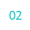
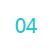

NoDi 소개
기존 PC의 하드디스크를 대체하는 가상 하드디스크 시스템으로,
각 PC의 개별 관리 대신 연결된 모든 PC의 중앙집중식 관리가 가능합니다.

기존 PC의 하드디스크를 대체하는 가상 하드디스크 시스템으로,
각 PC의 개별 관리 대신 연결된 모든 PC의 중앙집중식 관리가 가능합니다.
IT 관리자의 걱정을 덜어줍니다. 관리비는 줄이고 사용자 만족도는 높이고

PC방, 학교, 숙박업소나 관공서를 비롯한 기업에 특화된 솔루션입니다.
 간편한 관리 간편한 관리 |
각 클라이언트에 동일한 이미지 사용하여 OS, 프로그램, 패치 관리를 모든 클라이언트에
한 번에 적용 관리 인건비 절약 클라이언트 재부팅 시 바이러스나 멀웨어없는 깨끗한 OS 이미지로 자동 복구 보안성 향상 |
|---|---|
| 부팅 시간 단축 | SSD 드라이브 부팅과 거의 동일한 성능을 가짐 |
 HDD 구입 비용 절감 HDD 구입 비용 절감 |
Client PC에서 가장 고장율이 높은 HDD 불필요, 전력소모 감소 |
| ZFS 파일 시스템 | storage fool 전체를 모든 파일 시스템이 디스크 공간을 공유하여 효율적인 Storage 운영이 가능 데이터 손실없이 속도 향상 |
IT 기술로 세상을 이롭게 합니다.